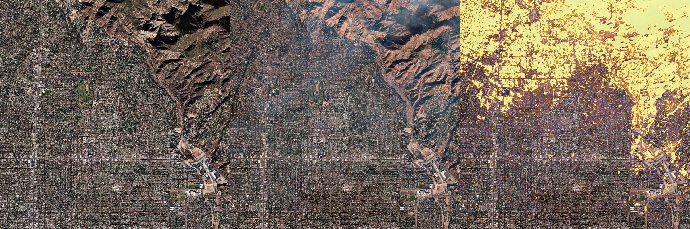
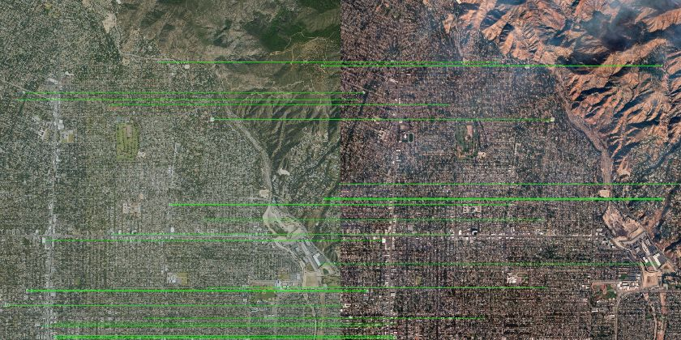
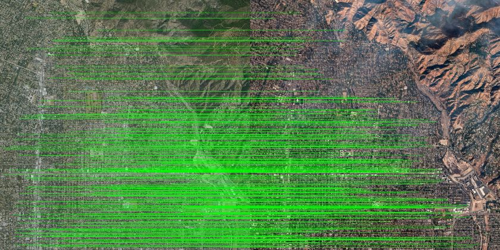
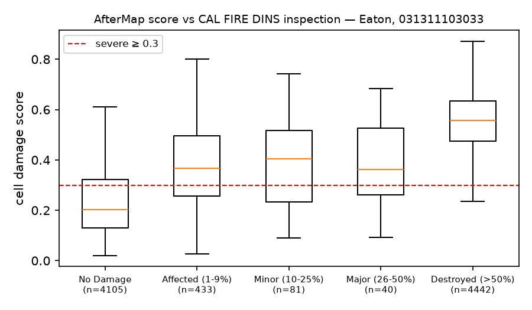
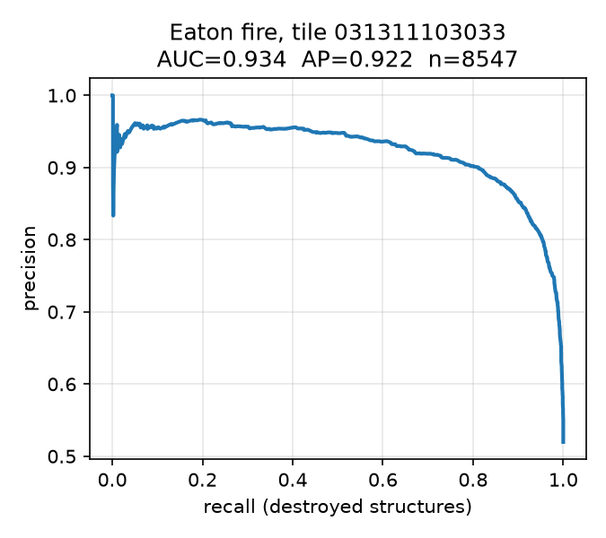

Eaton 산불 · 타일 031311103033 · Streamlit이 안 될 때 이 파일을 브라우저로 연다.

왼쪽 Maxar 전(2025-01-01) · 가운데 정합된 후(2025-01-10) · 오른쪽 ΔNDVI+SSIM 오버레이
SIFT · 60 인라이어 · 빈 셀 30/64

LightGlue · 949 인라이어 · 빈 셀 11/64



severe 임계값 0.30에서 정밀도 0.781 · 재현율 0.961. 중간 등급은 겹친다. 건물 분류 모델이 아니다.